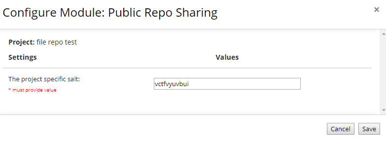
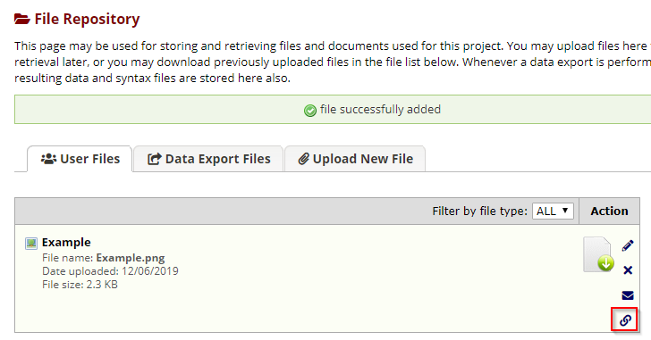
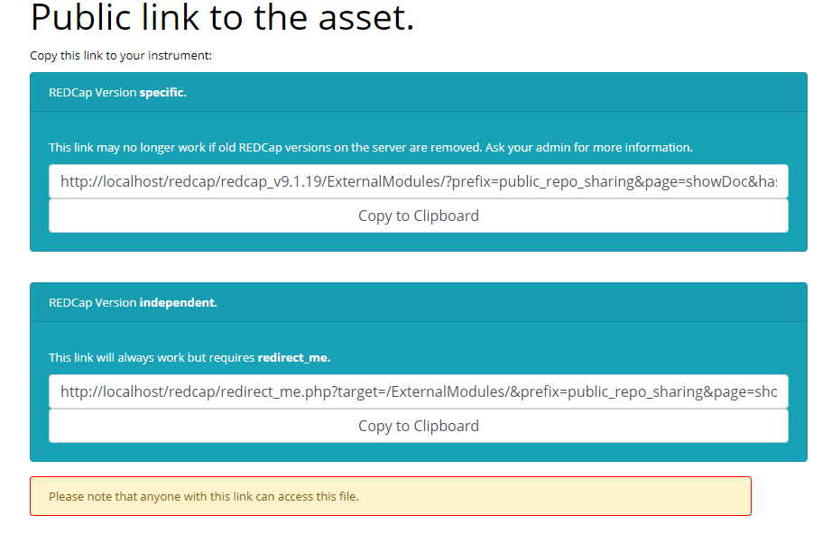

Configure a secret salt as a project setting. Keep this salt secret.

In the FileRepository you should now have an extra link icon.

Clicking on the link icon will show you a page with an associated link.

As demonstrated on this page note that the generated URL contains the REDCap version. This means that if the
version is removed from the server the link, lest your administrator has taken measures, the link will no longer function.
We also support a solution called redirect_me that remediates this problem. For this to work redirect_me must be installed.
Using the link:
You can use the generated link in dynamic fields for example:
<img src="Your_URL_here">
Frequently asked questions
Can I disable the URLs after sending them out?
Yes, but this will impact all shared URLs. The available options are: